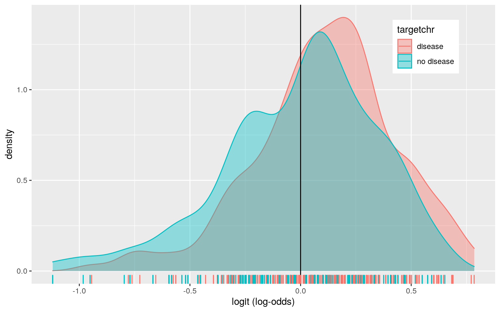

November 25, 2020
0. Introduction
library(dplyr)
library(tidyverse)
library(ggplot2)
library(sandwich)
library(lmtest)
library(glmnet)
library(vegan)
Heart <- read.csv("heart.csv")
Heart <- Heart %>% mutate(thalrevised = case_when(thal==1 ~ "normal",
thal==2 ~ "fixed defect",
thal==3 ~ "reversable defect")) #create categorical variable from original thal variable
Heart <- Heart %>% na.omit() #remove any potential NA values
Heart <- Heart[-c(2:3, 6:7, 9, 11:13)] #remove unneeded variablesThis dataset contains data collected to look at the presence of heart disease in the observed patients across the following four databases: Cleveland, Hungary, Switzerland, and Long Beach V. There are originally 1025 total observations and 14 variables in this dataset. I removed the following variables from the original dataset as I wanted to work with a smaller, more concise group of variables that I was curious about: sex, cp(type of chest pain), fbs(fasting blood sugar above or below 120 mg/dl), restecg(resting electrocardiographic results with values 0,1,2), exang(exercised induced angina), slope(slope of the peak exercise ST segment), ca(number of major vessels, 0-3, colored by florouscopy). Further, I excluded these deleted variables as I did not find them all sufficiently necessary to include in order to complete the analyses below. The original dataset did not contain a categorical variable and so I created a new variable based on the original variable of "thal" called "thalrevised", which is a categorical variable with the original value of 1 from "thal" attributed to "normal", 2 from "thal" attributed to "fixed defect", and 3 of "thal" attributed to "reversable defect". With the addition of this new categorical variable the Heart dataset that is used below contains the following 7 variables: age, trestbps(resting blood pressure), chol (serum cholesterol in mg/dl), thalach (maximum heart rate achieved), oldpeak(ST depression induced by exervise), target(presence of heart disease in the patient), and thalrevised. Target is a binary variable in which the value of 0 is attributed to "no disease" and the value of 1 is attribtued to "disease". Next, I ran code to remove any potential NA values, which left me with a dataset containing 1018 observations total. Lastly, I find this dataset interesting as it is related to the field of cardiology and contains biological/physiological data and measurements. I enjoy learning about cardiology and it is a relevant field to my family as I have a familial history of heart concerns on my father's side of the family.
1. MANOVA Testing
man1<-manova(cbind(trestbps,chol,thalach)~thalrevised, data=Heart)
summary(man1) #reject the null hypothesis here## Df Pillai approx F num Df den Df Pr(>F)
## thalrevised 2 0.11432 20.491 6 2028 < 2.2e-16 ***
## Residuals 1015
## ---
## Signif. codes: 0 '***' 0.001 '**' 0.01 '*' 0.05 '.' 0.1
' ' 1summary.aov(man1) #all three of the response variables have significant differences ## Response trestbps :
## Df Sum Sq Mean Sq F value Pr(>F)
## thalrevised 2 6719 3359.3 11.092 1.716e-05 ***
## Residuals 1015 307389 302.8
## ---
## Signif. codes: 0 '***' 0.001 '**' 0.01 '*' 0.05 '.' 0.1
' ' 1
##
## Response chol :
## Df Sum Sq Mean Sq F value Pr(>F)
## thalrevised 2 25642 12820.8 4.8372 0.008113 **
## Residuals 1015 2690207 2650.5
## ---
## Signif. codes: 0 '***' 0.001 '**' 0.01 '*' 0.05 '.' 0.1
' ' 1
##
## Response thalach :
## Df Sum Sq Mean Sq F value Pr(>F)
## thalrevised 2 46100 23050.2 47.535 < 2.2e-16 ***
## Residuals 1015 492179 484.9
## ---
## Signif. codes: 0 '***' 0.001 '**' 0.01 '*' 0.05 '.' 0.1
' ' 1Heart%>%group_by(thalrevised)%>%summarize(mean(trestbps),mean(chol), mean(thalach))## # A tibble: 3 x 4
## thalrevised `mean(trestbps)` `mean(chol)`
`mean(thalach)`
## <chr> <dbl> <dbl> <dbl>
## 1 fixed defect 129. 245. 155.
## 2 normal 137. 229. 136.
## 3 reversable defect 134. 250. 143.pairwise.t.test(Heart$trestbps,Heart$thalrevised, p.adj="none") ##
## Pairwise comparisons using t tests with pooled SD
##
## data: Heart$trestbps and Heart$thalrevised
##
## fixed defect normal
## normal 0.0012 -
## reversable defect 6.1e-05 0.2191
##
## P value adjustment method: nonepairwise.t.test(Heart$chol,Heart$thalrevised, p.adj="none")##
## Pairwise comparisons using t tests with pooled SD
##
## data: Heart$chol and Heart$thalrevised
##
## fixed defect normal
## normal 0.0157 -
## reversable defect 0.1631 0.0023
##
## P value adjustment method: nonepairwise.t.test(Heart$thalach,Heart$thalrevised, p.adj="none") ##
## Pairwise comparisons using t tests with pooled SD
##
## data: Heart$thalach and Heart$thalrevised
##
## fixed defect normal
## normal 4.9e-11 -
## reversable defect < 2e-16 0.014
##
## P value adjustment method: none1-0.95^9 #type 1 error rate## [1] 0.36975060.05/13 #bonferroni correction## [1] 0.003846154#Looking at Assumptions
library(rstatix)
group <- Heart$thalrevised
DVs <- Heart %>% select(trestbps,chol,thalach)
sapply(split(DVs,group), mshapiro_test) #assumption is violated as all of the p-values are < 0.05## fixed defect normal reversable defect
## statistic 0.9264215 0.9137643 0.893079
## p.value 1.128605e-15 0.0002755875 2.538146e-16box_m(DVs, group) #assumption with "null=homogeneity of vcov mats assumption met)" is violated## # A tibble: 1 x 4
## statistic p.value parameter method
## <dbl> <dbl> <dbl> <chr>
## 1 50.6 0.00000109 12 Box's M-test for Homogeneity of
Covariance MatricesI performed 13 tests total (1 MANOVA, 3 ANOVAs, and 9 t tests) with a 0.3697506 type 1 error rate. With the bonferroni correction, the new alpha value is 0.003846154. The MANOVA results (F value of 20.491 and p-value of < 2.2e-16) indicate that significant differences were found among the three effect levels (normal,fixed effect, and reversable effect) for at least one of the dependent variables (trestbps, chol, and thalach). The results of the ANOVA indicate that all three of the response variables have significant differences based on thalrevised (p-value of trestbps = 1.716e-05, p-value of chol = 0.008113, and p-value of thalach is < 2.2e-16). With the new alpha value yielded from the bonferroni correction, the t tests indicate that for trestbps (resting BP) and thalach(maximum heart rate achieved), the effect levels that significantly differed were fixed defect with both normal and reversable defect. For, chol (serum cholesterol) on the other hand, the t tests indicate that with the new alpha value none of the effect levels different significantly. The assumption of multivariate normality for each group is violated as the p-values of all groups are < 0.05. Running Box's M test here yields a p-value of 1.087015e-06, leading us to reject the null. Hence, the homogeneity of vcov mats assumption is violated as well.
2. Randomization Testing
#Using PERMANOVA
library(vegan)
dists<-Heart%>%select(trestbps, chol, thalach)%>%dist()
adonis(dists~thalrevised,data=Heart) #telling us to reject null hypothesis, there are differences##
## Call:
## adonis(formula = dists ~ thalrevised, data = Heart)
##
## Permutation: free
## Number of permutations: 999
##
## Terms added sequentially (first to last)
##
## Df SumsOfSqs MeanSqs F.Model R2 Pr(>F)
## thalrevised 2 78461 39230 11.41 0.02199 0.001 ***
## Residuals 1015 3489775 3438 0.97801
## Total 1017 3568235 1.00000
## ---
## Signif. codes: 0 '***' 0.001 '**' 0.01 '*' 0.05 '.' 0.1
' ' 1table(Heart$thalrevised)##
## fixed defect normal reversable defect
## 544 64 410SST<- sum(dists^2)/1018
SSW<-Heart%>%group_by(thalrevised)%>%select(thalrevised, trestbps,chol,thalach)%>%
do(d=dist(.[-1],"euclidean"))%>%ungroup()%>%
summarize(sum(d[[1]]^2)/544 + sum(d[[2]]^2)/64+ sum(d[[3]]^2)/410)%>%pull
F_obs<-((SST-SSW)/2)/(SSW/1015) #observed F statistic
Fs<-replicate(1000,{
new<-Heart%>%mutate(thalrevised=sample(thalrevised)) #permute the species vector
SSW<-new%>%group_by(thalrevised)%>%select(thalrevised, trestbps, chol, thalach)%>%
do(d=dist(.[-1],"euclidean"))%>%ungroup()%>%
summarize(sum(d[[1]]^2)/544 + sum(d[[2]]^2)/64+ sum(d[[3]]^2)/410)%>%pull
((SST-SSW)/2)/(SSW/1015) #calculate new F ratio on randomized data
})
{hist(Fs,prob = T); abline(v=F_obs, col="red", add=T)}
mean(Fs>F_obs) #p-value very small: reject null hypothesis## [1] 0The null hypothesis is that for trestbps(resting BP), chol(serum cholesterol), and thalach(maximum heart rate achieved), the means for each thalrevised (effect) are the same. The alternative hypothesis here is that for at least one of these variables, at least one thalrevised (effect) mean is different. The p-value of this PERMANOVA as indicated via both the adonis (p = 0.0001) as well as the handwritten code is very small, indicating that we can reject the null hypothesis.
3. Linear Regression Model
Heart$age_c <- Heart$age - mean(Heart$age)
Heart$trestbps_c <- Heart$trestbps - mean(Heart$trestbps)
fit1 <- lm(chol ~ age_c * trestbps_c, data = Heart)
summary(fit1)##
## Call:
## lm(formula = chol ~ age_c * trestbps_c, data = Heart)
##
## Residuals:
## Min 1Q Median 3Q Max
## -128.188 -32.625 -4.488 27.816 301.142
##
## Coefficients:
## Estimate Std. Error t value Pr(>|t|)
## (Intercept) 247.70051 1.64843 150.264 < 2e-16 ***
## age_c 1.04104 0.18216 5.715 1.44e-08 ***
## trestbps_c 0.29391 0.09679 3.036 0.00246 **
## age_c:trestbps_c -0.03343 0.01147 -2.915 0.00364 **
## ---
## Signif. codes: 0 '***' 0.001 '**' 0.01 '*' 0.05 '.' 0.1
' ' 1
##
## Residual standard error: 50.15 on 1014 degrees of
freedom
## Multiple R-squared: 0.06085, Adjusted R-squared: 0.05808
## F-statistic: 21.9 on 3 and 1014 DF, p-value: 9.537e-14new1<-Heart
new1$age_c<-mean(Heart$age_c)
new1$mean<-predict(fit1,new1)
new1$age_c<-mean(Heart$age_c)+sd(Heart$age_c)
new1$plus.sd<-predict(fit1,new1)
new1$age_c<-mean(Heart$age_c)-sd(Heart$age_c)
new1$minus.sd<-predict(fit1,new1)
newint<-new1%>%select(chol,trestbps_c,mean,plus.sd,minus.sd)%>%gather(age,value,-chol,-trestbps_c)
mycols<-c("#619CFF","#F8766D","#00BA38")
names(mycols)<-c("-1 sd","mean","+1 sd")
mycols=as.factor(mycols)
ggplot(Heart,aes(trestbps_c,chol),group=mycols)+geom_point()+geom_line(data=new1,aes(y=mean,color="mean"))+geom_line(data=new1,aes(y=plus.sd,color="+1 sd"))+geom_line(data=new1,aes(y=minus.sd,color="-1 sd"))+scale_color_manual(values=mycols)+labs(color="age (cont)")+theme(legend.position=c(.9,.2))#Looking at Linearity/Homoskedasticity
resids <- fit1$residuals
fitvalues <- fit1$fitted.values
ggplot() + geom_point(aes(fitvalues, resids)) + geom_hline(yintercept = 0,
color = "blue")#Looking at Normality
ggplot() + geom_qq(aes(sample = resids)) + geom_qq_line(aes(sample = resids))coeftest(fit1, vcov = vcovHC(fit1))##
## t test of coefficients:
##
## Estimate Std. Error t value Pr(>|t|)
## (Intercept) 247.700511 1.726506 143.4692 < 2.2e-16 ***
## age_c 1.041036 0.190182 5.4739 5.549e-08 ***
## trestbps_c 0.293912 0.085734 3.4282 0.0006321 ***
## age_c:trestbps_c -0.033428 0.010730 -3.1154 0.0018885 **
## ---
## Signif. codes: 0 '***' 0.001 '**' 0.01 '*' 0.05 '.' 0.1
' ' 1Interpretting this model, for every 1 increase in average age, serum cholesterol increases by 1.04104. Further, for every 1 increase in average resting blood pressure, serum cholesterol increases by 0.29391. When looking at the interaction of age_c:trestbps_c (average age and resting blood pressure), we see a 0.03343 decrease in serum cholesterol. The regression before recomputing regression results with robust standard errors indicates that the following variables explain a sifficiant portion of the variance in serum cholestoral: age, resting blood pressure, and the interaction between age and resting blood pressure. After recomputing regression results with robust standard errors, all of the variables all of the variables were still significant and had p-values smaller than in the regression before robust standard error. Compared to the original model, the SE value for age increased with robust standard error while the SE values for resting blood pressure and the interaction decreased very slightly. The proportion of the variation in serum cholesterol that my model explains is 0.06085.
4. Bootstrapped Standard Errors for Previous Regression Model
samp_distn <- replicate(5000, {
bootstrap_dat <- sample_frac(Heart, replace = T)
fit1 <- lm(chol ~ age_c * trestbps_c, data = bootstrap_dat)
coef(fit1)
})
#Calculuating Estimated SEs
samp_distn %>% t %>% as.data.frame %>% summarize_all(sd)## (Intercept) age_c trestbps_c age_c:trestbps_c
## 1 1.726059 0.1902085 0.08449693 0.0107636Compared to the original SEs, the bootstrapped standard errors are larger. Compared to the robust SEs, the bootstrapped standard errors are smaller, with the exception of the SE for trestbps_c. The bootstrapped standard error for trestbps_c is 0.08628512, while the robust SE for trestbps_c is 0.085734.
5. Logistic Regression Model Predicting Binary Variable
fit2 <- glm(target ~ trestbps + chol, data = Heart, family = "binomial")
summary(fit2)##
## Call:
## glm(formula = target ~ trestbps + chol, family =
"binomial",
## data = Heart)
##
## Deviance Residuals:
## Min 1Q Median 3Q Max
## -1.4639 -1.1986 0.9042 1.1260 1.5957
##
## Coefficients:
## Estimate Std. Error z value Pr(>|z|)
## (Intercept) 2.883814 0.556005 5.187 2.14e-07 ***
## trestbps -0.015106 0.003739 -4.040 5.34e-05 ***
## chol -0.003413 0.001256 -2.717 0.00658 **
## ---
## Signif. codes: 0 '***' 0.001 '**' 0.01 '*' 0.05 '.' 0.1
' ' 1
##
## (Dispersion parameter for binomial family taken to be 1)
##
## Null deviance: 1410.5 on 1017 degrees of freedom
## Residual deviance: 1382.9 on 1015 degrees of freedom
## AIC: 1388.9
##
## Number of Fisher Scoring iterations: 4exp(coef(fit2))## (Intercept) trestbps chol
## 17.8823468 0.9850071 0.9965926probs <- predict(fit2, type = "response")
table(predict = as.numeric(probs > 0.5), truth = Heart$target) %>% addmargins## truth
## predict 0 1 Sum
## 0 214 170 384
## 1 281 353 634
## Sum 495 523 1018(214+353)/1018 #Accuracy by hand## [1] 0.5569745353/523 #Sensitivity (TPR) by hand## [1] 0.6749522214/495 #Specificity (TNR) by hand## [1] 0.4323232353/634 #Precision (PPV) by hand## [1] 0.5567823class_diag <- function(probs,truth) {
#Confusion: Calculate Accuracy, TPR, TNR, PPV
tab<-table(factor(probs>.5,levels=c("FALSE","TRUE")),truth)
acc=sum(diag(tab))/sum(tab)
sens=tab[2,2]/colSums(tab)[2]
spec=tab[1,1]/colSums(tab)[1]
ppv=tab[2,2]/rowSums(tab)[2]
f1=2*(sens*ppv)/(sens+ppv)
if(is.numeric(truth)==FALSE & is.logical(truth)==FALSE) truth<-as.numeric(truth)-1
#Calculate Exact AUC
ord<-order(probs, decreasing=TRUE)
probs <- probs[ord]; truth <- truth[ord]
TPR=cumsum(truth)/max(1,sum(truth))
FPR=cumsum(!truth)/max(1,sum(!truth))
dup<-c(probs[-1]>=probs[-length(probs)], FALSE)
TPR<-c(0,TPR[!dup],1); FPR<-c(0,FPR[!dup],1)
n <- length(TPR)
auc<- sum( ((TPR[-1]+TPR[-n])/2) * (FPR[-1]-FPR[-n]) )
data.frame(acc,sens,spec,ppv,f1,auc)
}
class_diag(probs, Heart$target)## acc sens spec ppv f1 auc
## 1 0.5569745 0.6749522 0.4323232 0.5567823 0.6101988
0.5867837#Making Density Plot
Heart$logit<-predict(fit2,type="link")
Heart <- Heart %>% mutate(targetchr = case_when(target==0 ~ "no disease", target==1 ~ "disease"))
Heart%>%ggplot()+geom_density(aes(logit,color= targetchr,fill= targetchr), alpha=.4)+
theme(legend.position=c(.85,.85))+geom_vline(xintercept=0)+xlab("logit (log-odds)")+
geom_rug(aes(logit,color= targetchr))
#Making ROC Curve (Plot)
library(plotROC)
ROCplot <- ggplot(Heart) + geom_roc(aes(d = target, m = probs), n.cuts = 0)
ROCplotcalc_auc(ROCplot)## PANEL group AUC
## 1 1 -1 0.5867837In this model, controlling for serum cholesterol (chol), resting blood pressure (trestbps) decreases log-odds of presence of heart disease in the patient (makes it less likely). Further, every one-unit increase in resting blood pressure multiplies odds by 0.9850071. Further, controlling for resting blood pressure (trestbps), the serum cholesterol (chol) decreases log-odds of presence of heart disease in the patient (makes it less likely). Every one-unit increase in serum cholesterol multiples odds by 0.9965926. The accuracy of this model is 0.5569745. The sensitivity of this model is 0.6749522, the specificity of the model is 0.4323232, and the precision of the model is 0.5567823. The AUC of this model is 0.5867837, which based on our rule of thumb is considered bad.
6. Logistic Regression Model Predicting Binary Variable from All Variables
fit3 <- glm(target ~ age + trestbps + chol + thalach + oldpeak + thalrevised, data = Heart, family = "binomial")
summary(fit3)##
## Call:
## glm(formula = target ~ age + trestbps + chol + thalach +
oldpeak +
## thalrevised, family = "binomial", data = Heart)
##
## Deviance Residuals:
## Min 1Q Median 3Q Max
## -2.4312 -0.6361 0.3093 0.6761 2.6911
##
## Coefficients:
## Estimate Std. Error z value Pr(>|z|)
## (Intercept) -1.017688 1.068206 -0.953 0.34074
## age -0.007689 0.010509 -0.732 0.46434
## trestbps -0.005914 0.004900 -1.207 0.22746
## chol -0.004276 0.001740 -2.457 0.01400 *
## thalach 0.032491 0.004465 7.277 3.42e-13 ***
## oldpeak -0.600848 0.085214 -7.051 1.78e-12 ***
## thalrevisednormal -1.066078 0.330848 -3.222 0.00127 **
## thalrevisedreversable defect -2.102843 0.175440 -11.986
< 2e-16 ***
## ---
## Signif. codes: 0 '***' 0.001 '**' 0.01 '*' 0.05 '.' 0.1
' ' 1
##
## (Dispersion parameter for binomial family taken to be 1)
##
## Null deviance: 1410.48 on 1017 degrees of freedom
## Residual deviance: 913.84 on 1010 degrees of freedom
## AIC: 929.84
##
## Number of Fisher Scoring iterations: 5probs2 <- predict(fit3, type = "response")
table(predict = as.numeric(probs2 > 0.5), truth = Heart$target) %>% addmargins## truth
## predict 0 1 Sum
## 0 388 90 478
## 1 107 433 540
## Sum 495 523 1018class_diag <- function(probs2,truth) {
#Confusion: Calculate Accuracy, TPR, TNR, PPV
tab<-table(factor(probs2>.5,levels=c("FALSE","TRUE")),truth)
acc=sum(diag(tab))/sum(tab)
sens=tab[2,2]/colSums(tab)[2]
spec=tab[1,1]/colSums(tab)[1]
ppv=tab[2,2]/rowSums(tab)[2]
f1=2*(sens*ppv)/(sens+ppv)
if(is.numeric(truth)==FALSE & is.logical(truth)==FALSE) truth<-as.numeric(truth)-1
#Calculate Exact AUC
ord<-order(probs2, decreasing=TRUE)
probs2 <- probs2[ord]; truth <- truth[ord]
TPR=cumsum(truth)/max(1,sum(truth))
FPR=cumsum(!truth)/max(1,sum(!truth))
dup<-c(probs2[-1]>=probs2[-length(probs2)], FALSE)
TPR<-c(0,TPR[!dup],1); FPR<-c(0,FPR[!dup],1)
n <- length(TPR)
auc<- sum( ((TPR[-1]+TPR[-n])/2) * (FPR[-1]-FPR[-n]) )
data.frame(acc,sens,spec,ppv,f1,auc)
}
class_diag(probs2, Heart$target)## acc sens spec ppv f1 auc
## 1 0.8064833 0.8279159 0.7838384 0.8018519 0.8146754
0.8716805#Cross Validation
set.seed(1234)
k=10
data<-Heart[sample(nrow(Heart)),]
folds<-cut(seq(1:nrow(Heart)),breaks=k,labels=F)
diags<-NULL
for(i in 1:k){
train<-data[folds!=i,]
test<-data[folds==i,]
truth<-test$target
fit4<-glm(target ~ age + trestbps + chol + thalach + oldpeak + thalrevised, data=train,family="binomial")
probs3<-predict(fit4,newdata = test,type="response")
diags<-rbind(diags,class_diag(probs3,truth))
}
summarize_all(diags,mean,na.rm=T)## acc sens spec ppv f1 auc
## 1 0.8034848 0.8202275 0.7834598 0.8019367 0.8099046
0.8664449#LASSO
x <- -model.matrix(fit3)
y <- as.matrix(Heart$target)
cv <- cv.glmnet(x, y, family = "binomial")
lasso1 <- glmnet(x, y, , family = "binomial", lambda = cv$lambda.1se)
coef(lasso1)## 9 x 1 sparse Matrix of class "dgCMatrix"
## s0
## (Intercept) -2.51589277
## (Intercept) .
## age .
## trestbps .
## chol .
## thalach -0.02467606
## oldpeak 0.45484297
## thalrevisednormal 0.28180297
## thalrevisedreversable defect 1.55589110#Cross Validation for LASSO
set.seed(1234)
k = 10
data1 <- Heart[sample(nrow(Heart)), ]
folds <- cut(seq(1:nrow(Heart)), breaks = k, labels = F)
diags <- NULL
for (i in 1:k) {
train <- data1[folds != i, ]
test <- data1[folds == i, ]
truth <- test$target
fit5 <- glm(target ~ thalach + oldpeak + thalrevised, data = train, family = "binomial")
probs4 <- predict(fit5, newdata = test, type = "response")
diags <- rbind(diags, class_diag(probs4, truth))
}
summarize_all(diags, mean, na.rm=T)## acc sens spec ppv f1 auc
## 1 0.7897204 0.778998 0.7995195 0.8061198 0.7913135
0.8639625After fitting the model, I computed the diagnostics of accuracy, sensitivity, specificity, precision, and AUC. The accuracy was 0.7337917. The sensitivity was 0.7877629. The specificity was 0.6767677. The precision was 0.7202797, and the AUC was 0.8080692. Based on our rules of thumb, this AUC is considered good! When I performed a 10-fold CV with the same model the classification diagnostics of accuracy, sensitivity, specificity, precision, and the AUC were 0.8034848, 0.8202275, 0.7834598, 0.8019367 and 0.8664449 respectively. Based on our rules of thumb, this AUC is considered good as well! Compared to the in-sample metrics, the metrics yielded after running the 10-fold CV are higher for accuracy, sensitivity, specifity, precision, and AUC. After running LASSO on the same model/variable, the variables that were retained include thalac, oldpeak, and thalrevised. I then performed a 10-fold CV using only the variables lasso selected. I also ran the classification diagnostics of accuracy, sensitivity, specificity, precision, and the AUC, which here were 0.7897204 for accuracy, 0.778998 for sensitivity, 0.7995195 for specificity, 0.8061198 for precision, and 0.8639625 for AUC. Based on our rules of thumb, this AUC is considered good as well! When I ran the in-sample classification diagnostics for the first model in this section, I got an AUC value of 0.8080692, which is the smallest of the three I calculated in this section. The highest AUC value I calculated in this section (AUC = 0.8664449.) was from the out-of-sample classification diagnostics on the 10-fold CV with the same model as the first model ran in this section (predicting binary variable "target" from all variables). Lastly, the third AUC value I calculated in this section (AUC = 0.8639625) was found after performing the 10-fold CV using only the variables lasso selected. This AUC is greater than the AUC found from the in-sample classification diagnostics for the first model in this section, but is less than the AUC found after running the out-of-sample classification diagnostics on the 10-fold CV with the same model as the first model ran in this section.